Copyright @ 2015 Website Máy Ảnh MOBILE
Designed by Bằng Dự
Copyright @ 2015 Website Máy Ảnh MOBILE
Designed by Bằng Dự
Giới Thiệu Shop Máy Ảnh
Mục tiêu của chúng tôi
Mục tiêu chính của chúng tôi là làm cho khách hàng cảm thấy thoải mái và hài lòng khi vào mua hàng. Cam kết của chúng tôi để bán hàng chất lượng và sự hài lòng của khách hàng là không gì sánh kịp. Triết lý tư vấn của nhân viên chúng tôi là để bạn thoải mái chạm vào, cảm nhận, thử nghiệm, hỏi và thảo luận về nhu cầu của bạn
Tại zShop, với đội ngũ nhân viên chuyên nghiệp chúng tôi có thể hiểu và cảm nhận về nhu cầu của khách hàng một cách mạnh mẽ nhất, do đó chúng tôi luôn tự tin về tư vấn bán hàng và doanh số bán hàng của chúng tôi luôn tăng trưởng tốt từ nhiều năm qua
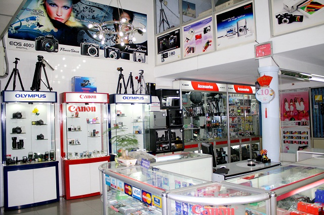
Đội ngũ nhân viêni
Hiện zShop đang có 3 cửa hàng chính tại 3 thành phố lớn và có đội ngũ nhân viên lên tới 40 người gồm các phòng ban khác nhau, Sales, Marketing, IT, Content ... và hiện tại zShop đang tiếp tục tuyển dụng mới.
Nhân viên bán hàng của chúng tôi được tuyển dụng chủ yếu từ các diễn đàn công nghệ, diễn đàn nhiếp ảnh của các nhiếp ảnh gia chuyên nghiệp và Photographers làm việc với nhiều năm kinh nghiệm lĩnh vực.
Họ sẽ hỏi những gì mà bạn chưa hiểu và chưa biết cách đặt câu hỏi và bạn đang tìm kiếm một sản phẩm phù hợp, và họ sẽ tư vấn cho bạn biết thiết bị bạn cần sẽ phải có những chức năng nào. Và họ sẵn sàng lắng nghe và góp ý kiến từ bạn.
Khách hàng của chúng tôi
Hiện khách hàng của chúng tôi đến từ rất nhiều ngành nghề khách nhau, từ các tầng lớp khác nhau, nhưng có chung một niềm đam mê là yêu công nghệ và nghệ thuật.
Hiện chúng tôi đang cố gắng mở rộng hệ thống trên toàn quốc nhằm đáp ứng mọi nhu cầu về nghệ thuật và công nghệ của các bạn với chất lượng dịch vụ và giá cả cạnh tranh nhất.
Hệ thống cửa hàng zShop
Với đặc điểm mua hàng tại Việt Nam, zShop đang dần mở rộng các chi nhánh khắp các thành phố lớn trong cả nước, hiện tại zShop đang có showroom tại các Thành Phố:
TP Hồ Chí Minh: 122 Cao Thắng, P. 4, Q. 3
TP Đà Nẵng: 134 Hàm Nghi, P. Thạc Gián, Q. Thanh Khê
TP Cần Thơ: 85A Lý Tự Trọng, P. An Phú, Q. Ninh Kiều
Đối tác của zShop
Hiện zShop đang là đại lý chính thức của đại đa số các hãng nổi tiếng về nghề Photo, video, audio tại Việt Nam: Canon LBM, Nikon VIC, Tamron Hoang Quan, Sony, Panasonic, Lieca, Carl Zeiss, Benro
Website của zShop
zShop.vn là một trong những website thương mại điện tử hàng đầu tại Việt Nam chuyên cung cấp các thông tin về hàng hóa, dịch vụ Camera, Photo, Video, Audio
Chúng tôi luôn nghiên cứu và phát triển không ngừng các tiện ích nhằm hỗ trợ tốt nhất cho khách hàng đã tin tưởng và sử dụng dịch vụ.
Chúng tôi đã thiết lập một hệ thống quản lý online, kiểm soát hàng tồn kho chặt chẽ và giá cả được nhập nhật liên tục, chúng tôi luôn cam kết bán đúng giá và mong muốn khách hàng xem chi tiết mô tả hàng hóa tại website chúng tôi.
Các cam kết khác của zShop
- Nếu vì bất cứ lý do gì bạn không hài lòng khi mua hàng tại zShop hãy liên hệ với chúng tôi ngay. Chúng tôi luôn luôn lắng nghe và luôn muốn bạn đến với zShop với sự tự tin biết rằng chúng tôi sẽ hỗ trợ bạn nếu có một vấn đề với hàng hóa đã mua.
- Chúng tôi chân thành cảm ơn và hy vọng bạn sẽ ghé thăm các cửa hàng của chúng tôi, nếu bạn đang ở xa hoặc không tiện đến mua hàng tại shop hãy gọi cho chúng tôi để được hướng dẫn mua hàng từ xa, chúng tôi cam kết chất lượng hàng hóa luôn đảm bảo và có bất kỳ trục trặc gì thì chúng tôi sẽ hoàn tiền lại cho các bạn.
Copyright @ 2015 Website Máy Ảnh MOBILE
Designed by Bằng Dự
|
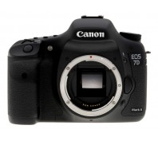
Canon 7D Mark II Giá bán: 32.000.000đ |
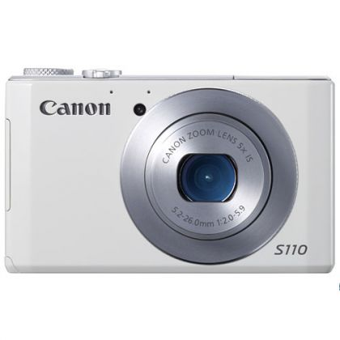
Cannon Owershot S110 (TRẮNG) Giá bán: 5.990.000đ |
|
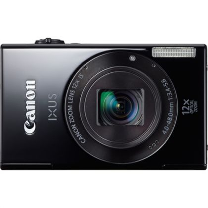
Cannon Ixus 510HS (ĐEN) Giá bán: 7.565.000đ |
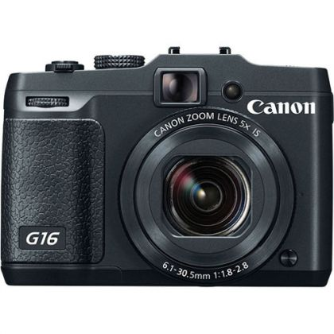
Cannon PowerBlu G16 Giá bán: 11.800.000đ |
|
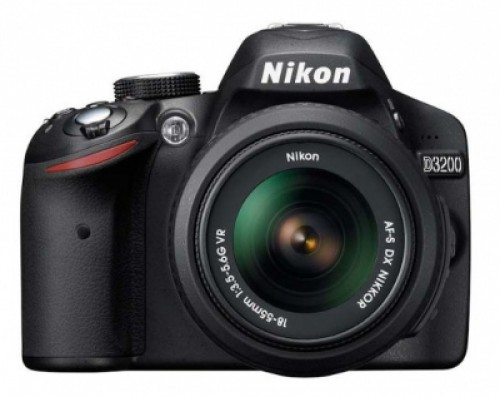
Nikon D3200 Giá bán: 8.700.000đ |
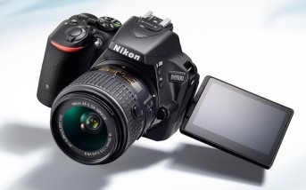
Nikon D5500 + 18-55MM VRII Giá bán: 15.900.000đ |
|
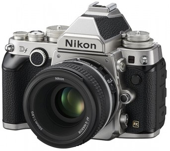
Nikon DF Body Giá bán: 56.000.000đ |
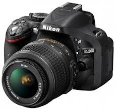
Nikon D5200 +18-55 VR Giá bán: 11.500.000đ |
|
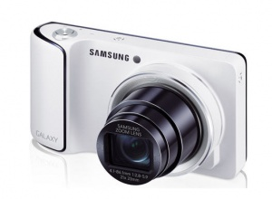
Sam Sung GC100 Giá bán: 7.700.000đ |
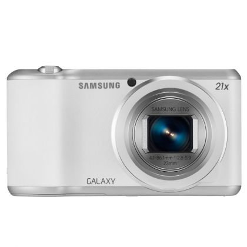
AMSUNG EK-GC200ZKAXEV Giá bán: 9.490.000đ |
|
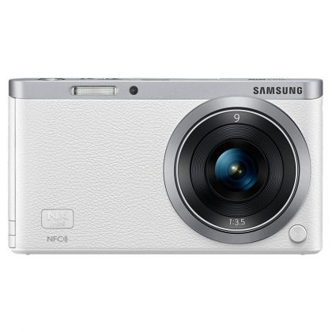
SAMSUNG EV-NXF1ZZB1HVN Giá bán: 6.490.000đ |
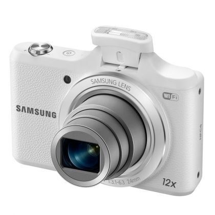
SAMSUNG EC-WB50FZBDWVN Giá bán: 3.290.000đ |
|
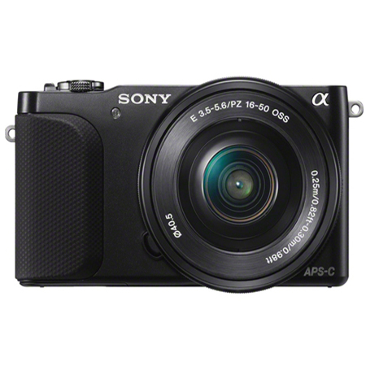
Sam Sung GC100 Giá bán: 7.700.000đ |
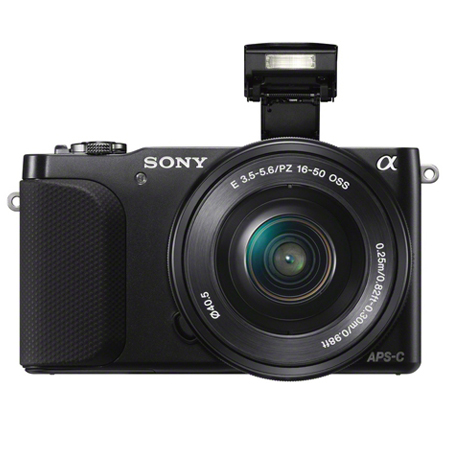
Sony NEX-3NL,B Giá bán: 8.800.000đ |
|
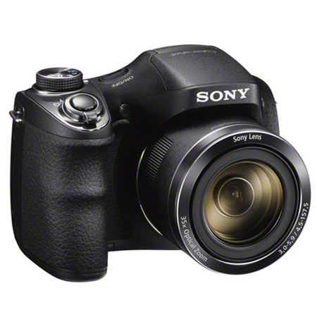
Sony DSC-H300 Giá bán: 4.900.000đ |
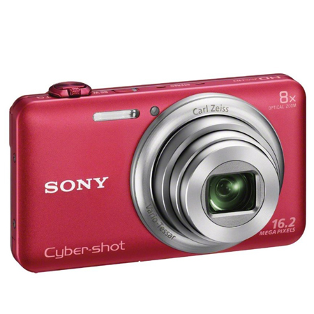
Sony DSC-WX80 Giá bán: 3.210.000đ |
Copyright @ 2015 Website Máy Ảnh MOBILE
Designed by Bằng Dự
Copyright @ 2015 Website Máy Ảnh MOBILE
Designed by Bằng Dự
Lịch sử của chúng tôi
Canon khởi đầu từ một công ty có số nhân viên ít ỏi và một niềm đam mê cháy bỏng. Công ty đó đã nhanh chóng trở thành nhà sản xuất máy ảnh nổi tiếng trên toàn thế giới và giờ là một tập đoàn đa phương tiện trên phạm vi toàn cầu. Với tài sản hơn 60 năm là chuyên gia công nghệ, niềm đam mê của chúng tôi vẫn không hề thay đổi. Canon sẽ tiếp tục sử dụng những công nghệ của mình để mang lại lợi ích cho mọi người, bởi mục tiêu mà hãng theo đuổi là trở thành một công ty được người dân trên toàn thế giới yêu mến.
Khởi đầu khiêm tốn từ một gian phòng nhỏ
Năm1933, một phòng thí nghiệm nhỏ chuyên chế tạo những chiếc máy ảnh chất lượng cao được dựng lên từ một phòng căn hộ giản đơn tại khu Roppongi của Tokyo. Vào thời điểm đó, tất cả máy ảnh chất lượng cao đều có xuất xứ từ châu Âu và chủ yếu là từ Đức. Chính tại căn phòng nhỏ này, những người trẻ tuổi mang một giấc mơ lớn đã rất nghiêm túc bắt đầu công việc của họ để chế tạo ra một chiếc máy ảnh chất lượng cao tại Nhật Bản, sự kiện này đánh dầu bước khởi đầu của Canon. Với sự chăm chỉ và tinh thần ham lập nghiệp, họ đã chế tạo thành công nguyên mẫu đầu tiên và đặt cho nó tên gọi Kwanon theo tên vị nữ bồ tát từ bi trong đạo Phật. Sau đó vào năm 1935, chiếc máy ảnh cửa sập ở mặt phẳng tiêu điểm 35 mm đầu tiên của Nhật Bản, chiếc Hanza Canon, ra đời, tạo nên nguồn gốc cho thương hiệu Canon.
Nỗ lực để làm ra chiếc máy ảnh tốt nhất thế giới
Năm 1950, vị chủ tịch đầu tiên của Canon, ông Takeshi Mitarai, lần đầu tới Mỹ để tham dự một hội chợ thương mại quốc tế. Được trực tiếp thăm quan những nhà máy hiện đại và trải nghiệm chất lượng cuộc sống cao, khi trở về, ông đã xây dựng một nhà máy chịu lửa bằng bê tông cốt thép tại khu Shimomaruko của Tokyo, một việc làm ông cho là thiết yếu để Canon có được thành công khi làm việc với thế giới. Mitarai đã nuôi dưỡng lòng tôn trọng của ông với loài người bằng việc nhấn mạnh tầm quan trọng của Sanji, hay tinh thần "ba tự", nguyên tắc dẫn đường cho các nhân viên của Canon. Năm 1955, Canon lập một cột mốc trên thị trường thế giới bằng việc mở cửa văn phòng tại Mỹ ở thành phố New York. Năm 1957, Canon ra mắt nhà phân phối duy nhất ở châu Âu, Canon Europa, tại Geneva, Thụy Sỹ. Tới năm 1967, xuất khẩu đã chiếm 50% tổng doanh số bán hàng của công ty.
Thách thức đa dạng hóa
Kể từ khi thành lập, Canon đã nỗ lực hết mình trong công việc để vào năm 1941 công ty thể hiện sự tự đa dạng hóa với việc giới thiệu chiếc máy chụp X quang gián tiếp đầu tiên của Nhật Bản cùng nhiều sản phẩm khác. Trong thập niên 60, công ty tiến thêm những bước dài trong việc đa dạng hóa bằng việc bổ sung các công nghệ điện, vật lý và hóa học vào các công nghệ quang và công nghệ chính xác của mình. Năm 1964, Canon gia nhập thị trường thiết bị văn phòng với sự ra mắt của loại máy tính điện tử 10 phím đầu tiên trên thế giới. Năm 1967, công ty đưa ra khẩu hiệu quản lý "máy ảnh ở tay phải, máy công tác ở tay trái " và vào năm 1969 công ty đã thay đổi tên gọi của mình từ Công ty Máy Ảnh Canon (Canon Camera Co., Inc.) sang Liên Hiệp Canon (Canon Inc.) Canon đã nhận lấy thách thức phải phát triển được loại máy photocopy dùng giấy thường đầu tiên của Nhật Bản, và loại máy đó đã được giới thiệu vào năm 1970. Kế hoạch của hãng trong việc tiếp tục đa dạng hóa được thực hiện bằng việc bước từ một lĩnh vực đầy thách thức này sang một lĩnh vực khác cũng không kém phần thách thức.
Đẩy lùi thảm họa với Kế Hoạch Premium Company Plan
Tới năm 1970, doanh số của Canon đã tăng tới 44,8 tỉ yên với một đội ngũ nhân viên hơn 5.000 người. Tuy nhiên, một loạt cú sốc đồng đô la và dầu lửa, tiếp theo đó là những rắc rối từ một bộ phận hiển thị máy tính điện tử bị lỗi trong năm 1974, đã đưa Canon vào một thời điểm khó khăn nghiêm trọng. Và trong nửa đầu của năm 1975, lần đầu tiên kể từ khi trở thành một công ty đại chúng, Canon không thể chi trả cổ tức. Năm 1976, Canon tiết lộ kế hoạch Premier Company Plan của mình, một chiến lược đầy tham vọng để chuyển đổi Canon thành một "công ty toàn cầu xuất sắc" qua các biện pháp như giới thiệu cơ cấu một tập đoàn kinh doanh theo chiều dọc và thiết lập hệ thống phát triển, sản xuất và bán hàng theo chiều ngang. Kế hoạch này đề ra những lí tưởng và huy động được sức mạnh của nhân viên, tạo điều kiện cho công ty phục hồi nhanh chóng.
Mở đầu thứ hai của Canon
Canon tiếp tục tăng trưởng nhờ kế hoạch Premier Company Plan. Với buổi bình minh của kỷ nguyên máy tính cá nhân, Canon đã giới thiệu một loạt các sản phẩm trước đó chưa từng có mặt. Các sản phẩm bao gồm một máy photocopy cá nhân dựa trên hệ thống cartridge tất cả trong một, một máy in laser với laser bán dẫn, và một máy in phun Bubble Jet. Đồng thời, Canon bắt đầu cuộc hành trình toàn cầu hóa của mình thông qua chu trình sản xuất có tính toàn cầu. Năm 1988 là năm kỷ niệm lần thứ 51 ngày thành lập công ty, Canon thông báo khởi đầu lần thứ hai của hãng và tuyên bố triết lý kinh doanh kyosei, một từ không phổ biến vào thời điểm bấy giờ. Canon cũng bắt đầu xúc tiến các hoạt động tiến bộ và thân thiện với môi trường, như tái chế cartridge và toàn cầu hóa các trang về phát triển của mình.
Kế Hoạch Excellent Global Corporation Plan
Canon đã phát triển những công nghệ chưa từng có và thận trọng nuôi dưỡng những công nghệ này để tạo ra những cơ hội kinh doanh và các sản phẩm không hề có đối thủ. Nhưng vào giữa những năm 1990, hệ thống phân chia công việc đã được thực thi kể từ những năm 1970 đã bắt đầu thể hiện những dấu hiệu rệu rã. Canon gánh những khoản nợ trị giá hơn 840 tỉ yên, điều này cho thấy công ty cần cải thiện cơ cấu tài chính của mình nếu vẫn mong muốn thực hiện những dự án nghiên cứu & phát triển dài hạn cũng như đưa ra những hình thức kinh doanh mới. Fujio Mitarai trở thành chủ tịch thứ sáu của Canon vào năm 1995, và năm 1996 kế hoạch Công Ty Toàn Cầu Xuất Sắc (Excellent Global Corporation Plan) được khởi động. Chuyển đổi tư duy doanh nghiệp từ tối ưu hóa từng phần sang tối ưu hóa toàn bộ và chuyển đổi về trọng tâm từ doanh số sang lợi nhuận, kế hoạch mới đánh dấu sự khởi đầu cho những phát minh đã mang lại hình ảnh mới cho Canon như chúng ta biết ngày nay.
Canon ở châu Á (ngoài Nhật Bản)
Các hoạt động tiếp thị và dịch vụ tại châu Á nằm dưới sự quản lý của hai trụ sở cấp khu vực ở châu Á: Bắc Á thuộc phạm vi công ty TNHH Canon Trung Quốc Pte đặt tại Bắc Kinh và công ty TNHH Canon Singapore Pte giám sát khu vực Nam & Đông Nam Á
Châu Á là ngôi nhà của ba trong số 9 trung tâm phát triển và nghiên cứu của Canon. Philipin tập trung vào việc phát triển ba trong số 9 trung tâm phát triển và nghiên cứu của Canon. Philipin chuyên môn hóa vào việc phát triển phần mềm và thiết bị ứng dụng điện tử trong khi đó Ấn Độ lại tập trung vào kỹ thuật xử lý hình ảnh và các phần mềm khác. Phòng thí nghiệm nghiên cứu ở Trung Quốc lại tập trung vào việc phát triển ngôn ngữ tiếng Trung, các công nghệ xử lý hình ảnh và các ứng dụng liên quan tới internet.
Có 7 nhà máy sản xuất ở Trung Quốc, Malaysia, Thái Lan và Việt nam sản xuất một loạt các sản phẩm của Canon như ống kính, máy photocopy, máy in phun bubble, máy ảnh số và máy ảnh phim.
Công ty TNHH Canon Singapore
Được thành lập năm 1979, Công ty TNH Canon Singapore là trụ sở chính của Canon ở khu vực Nam và Đông Nam Á. Sau khi sát nhập với các đơn vị bán hàng địa phương và công ty marketing (Công ty TNHH Canon Marketing (Singapore)) vào ngày 1 tháng một năm 2004, giờ đây công ty Canon Singapore chịu trách nhiệm giám sát các hoạt động trong nước và của khu vực ở Singapore. Hiện công ty chịu trách nhiệm dẫn dắt cho 18 công ty con ở các quốc gia khác, trong đó có Ấn Độ, Malaysia, Thái Lan và Việt Nam.
Nhánh marketing trong nước của Công ty Canon Singapore tiếp tục tung ra thị trường một loạt các thiết bị chụp ảnh kỹ thuật số và các giải pháp văn phòng toàn diện thông qua một đội ngũ nhân viên bán hàng trực tiếp và một mạng lưới bao gồm hơn 100 đại lý trên khắp quốc đảo. Công ty Canon Singapore cũng có thế mạnh về dịch vụ lớn nhất ở thành phố và có bốn trung tâm dịch vụ khách hàng nhằm cung cấp dịch vụ khách hàng toàn diện cho những khách hàng sử dụng sản phẩm của Canon.
Cam kết của Canon về dịch vụ có chất lượng đã đưa công ty trở thành công ty marketing đầu tiên tự động hóa văn phòng được trao tặng chứng nhận ISO 9002 (được nâng cấp lên thành ISO 9001:2000). Công ty cũng giành được giải thưởng Đẳng cấp Chất lượng Dịch vụ do Hội đồng năng suất và tiêu chuẩn Singapore trao tặng năm 1999. Chương trình "đào tạo tại chỗ" nổi bật của công ty cũng đem lại danh hiệu trung tâm OJT được công nhận bởi Viện Giáo dục kỹ thuật (ITE).
Thông tin về công ty TNHH Canon Marketing Việt Nam
Canon có mặt tại Việt Nam từ đầu những năm 1980 thông qua các nhà phân phối được uỷ quyền. Trong 10 năm qua, Canon đã đánh dấu sự hiện diện tích cực của mình với việc thành lập 04 nhà máy sản xuất tại khu công nghiệp Thăng Long - Hà Nội, Quế Võ và Tiên Sơn
- Bắc Ninh, Phố Nối – Hưng Yên và công ty Canon Marketing Việt Nam. Bên cạnh việc tạo công ăn việc làm cho hơn 20.000 người, Canon còn có những đóng góp nổi bật cho sự phát triển chung của xã hội qua những hoạt động xã hội giàu ý nghĩa. Công ty Canon Marketing Việt Nam hoạt động dưới sự chỉ đạo và hỗ trợ của nhóm Canon Marketing Châu Á và công ty Canon Singapore, trụ sở chính của Canon tại cả khu vực Nam và Đông Nam Á. Ngoài nhà phân phối Lê Bảo Minh, Canon hiện có hơn 300 đại lý tại Việt Nam.
Copyright @ 2015 Website Máy Ảnh MOBILE
Designed by Bằng Dự

"Tại trung tâm của hình ảnh". Đó là nơi thử thách là, và Nikon dám mang nó về.
Mỗi và mỗi người đều có một cảm giác duy nhất của thế giới - niềm vui, nỗi buồn, tự hỏi, hy vọng ... và vô cùng nhiều. Các hình ảnh có thể chụp những sắc thái của tim, thể hiện một cách sống động họ trong thế giới hữu hình. Hình ảnh cho chúng ta thấy thế giới trong một ánh sáng hoàn toàn mới, và điều này, đến lượt nó, sâu sắc có thể ảnh hưởng đến cuộc sống của chúng tôi. Và do đó, những hình ảnh có một sức mạnh vô hạn để truyền cảm hứng cho tinh thần con người. Đối với Nikon, không có gì hấp dẫn hơn so với tiềm năng của hình ảnh để diễn tả sự phong phú của kinh nghiệm con người là. Mong muốn chân thành của chúng tôi là tiếp tục khám phá những tiềm năng. Tại Nikon, chúng ta có ý thức phấn đấu để hoàn thiện sự nhạy cảm của chúng tôi. Quá trình này là chìa khóa để tạo ra giá trị mới cho hình ảnh - và các bí quyết để tạo cảm hứng cho bạn để nhận ra tất cả những khát vọng của trái tim của bạn.
Tại trung tâm của hình ảnh" thể hiện ba lời hứa của Nikon với thế giới.
Nikon Promise # 1 - Be True cho Trái Tim
Nikon sẽ mang bản chất của hình ảnh. Nikon đã phát triển công nghệ hình ảnh hàng đầu thế giới trong nhiều thập kỷ. Kết quả là độ tin cậy và chất lượng mà bạn đã mong đợi từ các hình ảnh. Yêu cầu hình ảnh thay đổi theo từng thời kỳ mới, nhưng các yếu tố cần thiết vẫn như cũ. Tại Nikon, chúng tôi nghĩ rằng bạn vẫn muốn các hình ảnh để làm kỷ niệm, để cung cấp cho bạn một cửa sổ về phát hiện, và để nâng cao sự sáng tạo của bạn. Là một công ty của các chuyên gia trong nghệ thuật chụp ảnh, Nikon sẽ luôn ở lại đúng với giá trị chủ yếu của hình ảnh - những lời hứa về chất lượng đáng tin cậy. Đây là nền tảng vững chắc cho phép chúng tôi tiếp tục để đáp ứng tất cả các nhu cầu chụp ảnh của bạn.
Nikon Promise # 2 - Đốt cháy trái tim
Nikon sẽ truyền cảm hứng cho một niềm đam mê mới cho cuộc sống với các hình ảnh. Các hoan nghênh toàn cầu được hưởng F Series và Sản phẩm Nikon khác là dấu của thế giới của chính những nỗ lực không ngừng của Nikon để thách thức mọi giới hạn. Không cần phải nói, tinh thần tự hào này thách thức vẫn tồn tại trong thời đại kỹ thuật số. Tại Nikon, chúng tôi tin rằng bạn muốn hình ảnh để thêm năng động và năng lượng cho cuộc sống. Bạn muốn sử dụng hình ảnh để thể hiện bản thân, để duy trì kết nối với những người khác, và để khám phá tiềm năng của chính bạn. Lấy chất lượng hình ảnh tuyệt vời của Nikon và chức năng. Thêm thiết kế đó là một niềm vui thật sự cho bàn tay và mắt. Đầu nó đi với dịch vụ giúp bạn chia sẻ những thắc mắc của hình ảnh với những người khác. Không có nghi ngờ rằng hình ảnh Nikon sẽ tiếp tục truyền cảm hứng cho cuộc sống với một niềm đam mê.
Nikon Promise # 3 - Phát minh cho trái tim
Nikon sẽ thực hiện ước mơ của thế giới cho hình ảnh trở thành sự thật Khi nhu cầu về hình ảnh liên tục phát triển, những gì được yêu cầu của Nikon là rõ ràng. Nhiệm vụ của chúng ta là để biết những gì bạn muốn chụp ảnh từ ngày hôm nay và ngày mai, và để trao quyền cho bạn thông qua hình ảnh để thực hiện ước mơ của bạn. Đối với Nikon, có nghĩa là đi đầu trong việc xác định giá trị mới cho các hình ảnh, và sau đó cung cấp giá trị cho bạn. Có hy vọng vô biên trong trái tim của mọi người. Chúng tôi hiểu lý do tại sao bạn nhìn để chụp ảnh để cung cấp đường cho thăm dò và đổi mới - và thậm chí cung cấp cho bạn một cái nhìn thoáng qua của tương lai. Tại Nikon, chúng tôi tự hào trong tư duy cách mạng của chúng tôi và cam kết không ngừng cải tiến công nghệ của chúng tôi. Kết hợp hai đức tính này, và bạn có nhiên liệu cho các nhiệm vụ liên tục của chúng tôi để tạo ra giá trị mới cho hình ảnh. Và đó chính là những niềm đam mê mà có thể thực hiện ước mơ trở thành sự thật.
Copyright @ 2015 Website Máy Ảnh MOBILE
Designed by Bằng Dự
Khởi nghiệp từ năm 1938 tại tỉnh phía bắc Kyungsang, Hàn Quốc với tên gọi ban đầu là SAMSUNG General Stores và 40 nhân viên. Sau hơn 70 năm phát triển cùng với những bước thăng trầm lịch sử, Samsung đã trở thành một trong những tập đoàn đa quốc gia hàng đầu Thế giới, là niềm kiêu hãnh và tự hào của người dân Hàn Quốc. Tiến trình phát triển của SAMSUNG luôn song hành với quan điểm : “Đóng góp kinh tế cho quốc gia”, “Ưu tiên cho nguồn nhân lực” và “Theo đuổi chủ nghĩa duy lý”. Mỗi một quan niệm đều tương ứng với những thời khắc quan trọng trong lịch sử của SAMSUNG, phản ánh các giai đoạn khác nhau trong sự nghiệp phát triển của Công ty, từ hãng chuyên về công nghiệp gia dụng trở thành hãng đi đầu về điện tử tiêu dùng toàn cầu.
Một Công ty hàng đầu về kỹ thuật số, một công dân quốc tế có trách nhiệm, một tập đoàn đa năng, một doanh nghiệp có đạo đức,… SAMSUNG là tất cả và còn hơn thế nữa. Tại TẬP ĐOÀN SAMSUNG (SAMSUNG GROUP) và SAMSUNG ĐIỆN TỬ (SAMSUNG ELECTRONICS), các sản phẩm, nguồn nhân lực và phương pháp kinh doanh được xây dựng và duy trì chuẩn cao nhất, SAMSUNG đã đóng góp một cách hiệu quả cho một Thế giới tốt đẹp hơn.
Tầm nhìn SAMSUNG 2020
Tầm nhìn của Công ty Điện tử Samsung trong thập kỷ mới đã được nêu rõ trong tuyên ngôn “Thấu hiểu Thế giới, Kiến tạo Tương lai”
Tầm nhìn này được phản ánh trong cam kết của Công ty Điện tử Samsung trong việc khơi nguồn cảm hứng cho cộng đồng, dựa trên ba thế mạnh chính của mình là “Công nghệ mới” – “Sản phẩm mới” và “Giải pháp sáng tạo” và trong việc quảng bá những giá trị này của Samsung đến với ba nhân tố chính trong mối quan hệ cốt lõi của Samsung – Ngành công nghiệp – Đối tác và Nhân viên. Thông qua những nỗ lực này, Samsung hy vọng sẽ tiếp tục xây dựng một xã hội tốt đẹp hơn cũng như những kinh nghiệm sống phong phú hơn cho tất cả mọi người.
Samsung đã vạch ra một kế hoạch cụ thể để có thể đạt mức doanh thu 400 tỉ USD và trở thành một trong năm thương hiệu hàng đầu trên thế giới đến năm 2020. Để đạt mục đích này, Samsung đã xác định 3 phương pháp chiến lược trong việc quản lý, đó là “Sáng tạo”, “Quan hệ đối tác” và “Tài năng”
Samsung tin tưởng vào tương lai. Trên nền tảng của những thành công đã đạt được, Samsung sẽ tiếp tục khám phá những lĩnh vực mới như chăm sóc sức khỏe, y tế, dược phẩm và công nghệ sinh học. Samsung quyết tâm sẽ trở thành một công ty dẫn đầu đầy sáng tạo tại những thị trường mới và một doanh nghiệp hàng đầu trong tương lai.
NGHIÊN CỨU VÀ PHÁT TRIỂN (R&D) tại Samsung
(Mỗi ngày, có hơn 1/4 nhân viên SAMSUNG - 42,000 người – tham gia nghiên cứu và phát triển những thế hệ sản phẩm mới tốt hơn, những sản phẩm có thể làm thay đổi cuộc sống hàng ngày vượt cả mức tưởng tượng)
Đổi mới luôn đóng vai trò quan trọng trong chiến lược kinh doanh của SAMSUNG. Khi những công nghệ mới liên tục xuất hiện trên thị trường, tốc độ là điều cần thiết để nắm giữ được vị thế cạnh tranh trong kỷ nguyên của công nghệ ngày nay, bởi vậy việc liên tục dẫn đầu những thị trường mới là điều vô cùng cần thiết. Thông qua sự hợp tác giữa những con người ưu tú, giàu sức sáng tạo, hệ thống Trung tâm R&D toàn cầu - một tổ chức khuyến khích hợp tác, hỗ trợ giữa những đối tác kinh doanh và vì sự phát triển toàn diện và bền vững. SAMSUNG đặt R&D làm tâm điểm cho tất cả những mục tiêu để thực hiện.
SAMSUNG luôn đòi hỏi và hướng đến sự đổi mới cấp độ toàn cầu. Trung tâm nghiên cứu và phát triển chính là sự kết nối chặt chẽ của 6 trung tâm SAMSUNG tại Hàn Quốc và 18 trung tâm tại 9 nước khác, bao gồm Mỹ, Anh, Nga, Israel, Ấn Độ, Nhật và Trung Quốc cùng những trung tâm nghiên cứu và trường đại học khác. Kết nối gần hơn nữa, những trung tâm này được giao nhiệm vụ tuyển những tài năng xuất sắc nhất tại nước sở tại, khám phá những xu hướng công nghệ mới nhất của các nước này, và mang đến những công nghệ tối ưu thiết thực cho cuộc sống.
Giới thiệu về Samsung Electronics Việt Nam (SEV)
Công ty TNHH Samsung Electronics Việt Nam (SEV), trụ sở tại KCN Yên Phong I, xã Yên Trung, huyện Yên Phong, tỉnh Bắc Ninh, là thành viên của tập đoàn Điện tử Samsung, Hàn Quốc chuyên sản xuất điện thoại di động và các sản phẩm điện tử công nghệ cao. Tại Việt Nam, SEV được đánh giá là một trong những công ty có môi trường làm việc hiện đại và tốt nhất (GWP – Great WorkPlace); chính sách tiền lương, thưởng cạnh tranh với mục tiêu công bằng, nâng cao hiệu quả làm việc và tăng cường sự gắn bó của các thành viên.
Chính thức đi vào hoạt động từ tháng 4/2009, Công ty TNHH Samsung Eletronics Việt Nam (SEV) đã bước đầu gặt hái được những thành công nhất định và đang là một trong những doanh nghiệp có vốn đầu tư nước ngoài thành công nhất tại Việt Nam. Sau hơn 3 năm đi vào hoạt động, mốc kim ngạch xuất khẩu trong năm 2011 của SEV đạt gần 6 tỉ USD, đóng góp khoảng 6% tổng doanh thu xuất khẩu trong năm 2011 của Việt Nam. Với kết quả này, SEV đã từng bước thực hiện sứ mệnh của mình là góp phần vào sự phát triển Kinh tế - Xã hội của Việt Nam, giúp thắt chặt hơn nữa tình hữu nghị Việt - Hàn.
SEV tự hào là nhà máy sản xuất điện thoại di động lớn nhất trên Thế giới với dây chuyền sản xuất hiện đại và khép kín. Sản phẩm của SEV được xuất khẩu đến nhiều quốc gia và vùng lãnh thổ trên toàn cầu, trong đó có hơn 55,2% sản phẩm được bán trên thị trường châu Âu, thị trường luôn được xem là khắt khe và khó tính nhất hiện nay. SEV đặt mục tiêu trở thành một trong những Công ty được ngưỡng mộ nhất tại Việt Nam và tiếp tục góp phần đưa Samsung trở thành thương hiệu được yêu thích nhất của người tiêu dùng.
Trung tâm Nghiên cứu và phát triển của Samsung tại Việt Nam
SVMC là trung tâm R&D lớn nhất của SAMSUNG tại khu vực Đông Nam Á. Được thành lập năm 2012, SVMC có trụ sở tạm thời tại Khu tổ hợp SAMSUNG Việt Nam, Khu công nghiệp Yên Phong I, Yên Trung, Yên Phong, Bắc Ninh. SVMC đang tiến hành khảo sát để trong tương lai, trụ sở chính của SVMC sẽ được chuyển về Thủ đô Hà Nội.
Là trung tâm nghiên cứu và phát triển đầu tiên của SAMSUNG tại khu vực Đông Nam Á với nguồn nhân lực ước tính đến năm 2013 khoảng 1,000 nhân viên, SVMC kỳ vọng viết nên một trang mới trong lịch sử phát triển ngành công nghiệp Công nghệ Thông tin của Việt Nam. Để đạt điều này, SVMC hiểu con người là yếu tố quyết định. Vì thế, SVMC luôn chủ động phát triển con người toàn diện, vững về năng lực chuyên môn và chuyên nghiệp trong phong cách làm việc.
Copyright @ 2015 Website Máy Ảnh MOBILE
Designed by Bằng Dự
Hai nhà sáng lập ra công ty Sony là Masaru Ibuka và Akio Morita.
Tháng 6-1957, một tấm bảng lớn mang tên Sony được dựng gần sân bay Haneda ở Tokyo. Tháng 1-1958, Công ty Totsuko chính thức trở thành Công ty Sony. Tháng 12 năm đó, tên Sony được niêm yết tại Sở Giao dịch chứng khoán Tokyo. Một trong những việc đầu tiên mà Morita và các đồng nghiệp nghĩ đến là lần lượt đăng ký thương hiệu Sony tại 170 nước, vùng lãnh thổ và đăng ký nhiều ngành sản xuất khác nhau ngoài ngành chính là điện tử. Điều đó cho thấy sự nhìn xa trông rộng của các nhà sáng lập và qua đó cũng bộc lộ khát vọng sẽ chinh phục thế giới của họ.
Hai nhà sáng lập Sony đều có "gốc gác" là dân kỹ thuật, rất giỏi với những sáng chế. Hơn ai hết, họ ý thức được tầm quan trọng của việc luôn phải tiên phong trong lĩnh vực sáng tạo ra những sản phẩm mới. Con đường phát triển của Sony là luôn luôn tìm tòi, nghiên cứu để tạo ra những sản phẩm mới phục vụ đời sống. Nhờ đó mà các sản phẩm đồ điện tử trở nên hết sức phong phú và đa dạng, đáp ứng các nhu cầu của người tiêu dùng. Khoảng 6%-10% doanh thu hàng năm của Sony được trích ra dành cho việc nghiên cứu. Các sản phẩm không chỉ nhắm vào các nhu cầu hiện tại mà còn dành cho cả các nhu cầu chưa nảy sinh.
Cần nhắc lại là sản phẩm đầu tiên được sản xuất dưới thương hiệu Totsuko là chiếc máy ghi âm dùng băng từ tính, ra đời năm 1950 và hai năm sau đã quen mặt với thị trường. Năm năm sau, sản phẩm thứ hai của Morita và các đồng nghiệp được đánh giá là một trong những bước đột phá ấn tượng nhất, đó là chiếc radio bán dẫn nhãn hiệu TR-55 chạy bằng transistor đầu tiên của nước Nhật, mở đầu kỷ nguyên bán dẫn phát triển rầm rộ vào thập niên 1960. Chiếc truyền hình transistor đầu tiên
Tháng 5-1960, Sony cho ra đời chiếc máy truyền hình (TV) transistor đầu tiên lấy tên là TV8 -301. Thành quả trên được sự công nhận của cả thế giới, vinh dự không chỉ riêng của Sony, mà còn của cả nền công nghiệp điện tử của Nhật Bản. Đầu những năm 1960, Morita và các đồng nghiệp bắt đầu quan tâm đến một sản phẩm khác. Đó là máy sử dụng băng video VTR (Video Tape Recorder) do hãng Ampex của Mỹ chế tạo và cung cấp cho các đài phát thanh.
Vì sử dụng cho mục đích phát thanh nên máy rất cồng kềnh, mỗi máy chiếm diện tích cả một căn phòng, còn giá thành hơn 100.000 USD/chiếc thì chỉ những cơ quan có ngân sách dồi dào mới sắm nổi. Mục tiêu mà Ibuka và Morita nhắm đến là những chiếc máy VTR gọn nhẹ, giá cả phù hợp với túi tiền của đa số người tiêu dùng trong nước.
Tất cả chuyên viên, kỹ sư của Sony tập trung nỗ lực theo hướng này, thiết kế và sản xuất thử nhiều mẫu sản phẩm khác nhau, mẫu sau gọn nhẹ, tiện lợi hơn mẫu trước. Chiều ngang băng video rộng hơn 5 cm của hãng Ampex đã được thu nhỏ còn không đến 2 cm. Chiếc máy VTR nguyên mẫu được đặt tên là U - Matic, đã được sự đón nhận khá tích cực của người tiêu dùng, chỉ riêng hãng xe hơi Ford đã đặt mua một lần 5.000 chiếc để dùng trong công tác huấn luyện nhân viên. Thành công này khuyến khích Morita và các chuyên viên tiến xa thêm bước nữa, đó là tiếp tục cải tiến máy VTR, hạ giảm giá thành bằng cách dùng băng video nhỏ hơn nữa, có chiều rộng mặt băng không đến 1,3 cm và sử dụng 100% linh kiện bán dẫn.
Tháng 10-1968, Sony cho ra đời chiếc TV màu nhỏ gọn sử dụng đèn hình trinitron, một công nghệ mới mẻ giúp đèn có hiệu năng cao. Chính sáng kiến về trinitron này đã được Hàn Lâm viện quốc gia Mỹ về nghệ thuật truyền hình và khoa học tặng giải thưởng Emmy cho tập đoàn Sony vào năm 1972. Những năm gần đây, để phát triển sản phẩm hàng điện tử gia dụng, Sony đặc biệt chú trọng đến việc vươn lên vị trí hàng đầu trong lĩnh vực liên quan.
Năm 1988, Sony tiếp nhận công ty CBS Records Inc để thành lập nên Sony Music Entertainment và năm 1989 tiếp tục mua lại Columbia Pictures thành lập nên Sony Picture Entertainment. Sony PlayStation khai trương vào năm 1995 đưa tập đoàn Sony trở thành tập đoàn chiếm vị trí hàng đầu trong lĩnh vực trò chơi điện tử. Hiện nay Tập đoàn Sony có 168.000 nhân viên làm việc tại khắp các châu lục trên toàn cầu. Là nhà sản xuất điện tử hàng đầu thế giới, Sony đạt nhiều thành công trong lĩnh vực điện tử dân dụng như tivi màu, sản phẩm audio & video, trò chơi điện tử, lĩnh vực điện tử chuyên dụng như thiết bị phát thanh truyền hình, y tế, giáo dục, nghiên cứu khoa học. Ngày nay, danh mục của Sony có trên 5.000 sản phẩm bao gồm đầu DVD, máy chụp ảnh, máy tính cá nhân, TV, các thiết bị âm thanh nổi, thiết bị bán dẫn và chúng được thiết lập thành những danh mục có thương hiệu như máy nghe nhạc cá nhân Walkman, TV Trinitron, dòng điện thoại di động Xperia, máy vi tính Vaio, TV màn ảnh rộng Wega, máy ghi hình HandyCam, máy chụp ảnh kỹ thuật số Cybershot và bộ trò chơi PlayStation. Trong thời đại bùng nổ công nghệ thông tin, Sony là một trong những tên tuổi nổi bật của lĩnh vực chế tạo máy tính, viễn thông và dịch vụ Internet.
Sony còn là nhà sản xuất kinh doanh hàng đầu thế giới về âm nhạc và điện ảnh với hoạt động của công ty như Sony Picture Entertainment, Sony Music Entertainment, Sony BMG, v.v…

| Tính năng nổi bật | |
| Màn hình: HD, 5.25", 720 x 1280 pixels | |
| CPU: Qualcomm Snapdragon 400,4 nhân,1.2 GHz | |
| RAM 1.5 GB | |
| Hệ điều hành: Android 4.3 (Jelly Bean) | |
| Camera chính: 8.0 MP, Quay phim FullHD 1080p@30fps | |
| Camera phụ: 1.9 MP | |
| Bộ nhớ trong: 8 GB | |
ĐÁNH GIÁ SẢN PHẨM
Có thể nói, Galaxy Grand 2 đã cải tiến rất nhiều so với dòng Galaxy Grand trước đó, đây được coi là một thiết kế lai giữa hai thiết bị đình đám Galaxy S4 và Note 3. Trong khi mặt trước các bạn cảm thấy như là một phiên bản Galaxy S4 thì mặt sau lại được bao phủ bởi một lớp da như trên Galaxy Note 3 khiến máy vừa cao cấp lại vừa độc đáo.

Copyright @ 2015 Website Máy Ảnh MOBILE
Designed by Bằng Dự
Tìm kiếm máy ảnh:
Copyright @ 2015 Website Máy Ảnh MOBILE
Designed by Bằng Dự
Copyright @ 2015 Website Máy Ảnh MOBILE
Designed by Bằng Dự